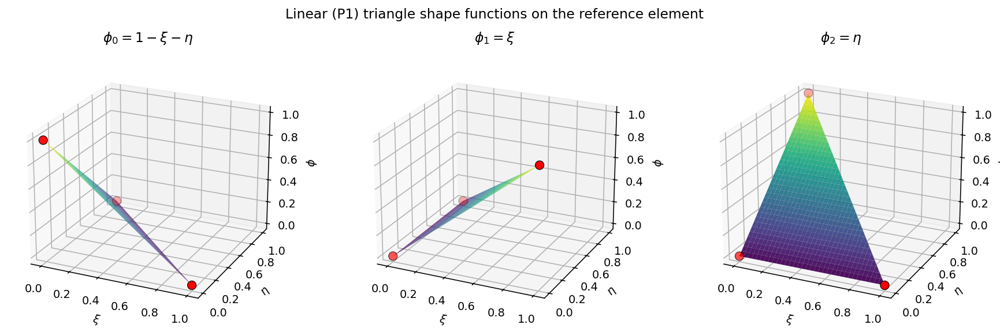
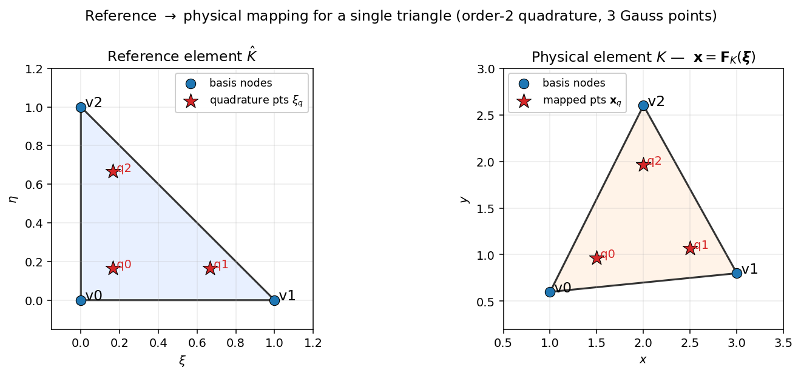

单元与求积¶
cells 中的每一项都以一个 单元类型字符串 作为键——例如 "triangle"、"hexahedron27"、"wedge" 等等——它对应于 tensormesh.element 中七种参考形状之一。这些单元类承载了装配器内部使用的基函数定义和求积规则；你很少会直接调用它们，但理解它们所暴露的内容能让流程的其余部分（装配、IO、高阶求解）不再那么神秘。
本页分为两部分。首先是受支持类型的清单，以及从 order=1 过渡到高阶求解的高层规则。其次是对 参考 → 物理流程 的逐步讲解，该流程将静态的参考单元定义转化为装配器实际使用的逐单元形函数值、梯度和积分权重。
受支持的单元类型¶
TensorMesh 提供七种参考形状，覆盖一维、二维和三维，每种都带有线性及高阶变体：
类 |
维度 |
线性类型字符串 |
高阶类型字符串 |
|---|---|---|---|
一维 |
|
|
|
二维 |
|
|
|
二维 |
|
|
|
三维 |
|
|
|
三维 |
|
|
|
|
三维 |
|
|
三维 |
|
|
字符串与维度/阶数之间的映射以两个普通字典的形式暴露出来：
from tensormesh import element_type2order, element_type2dimension
element_type2order["triangle6"] # 2
element_type2dimension["hexahedron"] # 3
反向映射 element_type2element 会返回对应的类：
from tensormesh.element import element_type2element
element_type2element("hexahedron27") # tensormesh.Hexahedron
类型字符串的命名遵循 meshio 约定：小写的形状名（triangle）加上高阶变体的基节点数（triangle6、hexahedron27）。注意有一处从 meshio 沿袭而来的不一致——三维三棱柱对应的 类 是 Prism，但其 字符串 却是 "wedge"。
高阶单元¶
向内置网格生成器传入 order=2（或 3、……）即可：
from tensormesh import Mesh
tri = Mesh.gen_rectangle(chara_length=0.1, order=1) # "triangle"
tri6 = Mesh.gen_rectangle(chara_length=0.1, order=2) # "triangle6"
hex27 = Mesh.gen_cube(chara_length=0.2, order=2) # "hexahedron27"
mesh.cells 中的单元类型字符串会相应更新，下游的每个装配器都会自动采用高阶基函数，无需任何额外配置。
流程：从参考形状到物理积分¶
从概念上讲，单元层回答的是一个问题：给定一个要在网格上积分的弱形式，求积点位于何处？那里的形函数值和梯度是多少？积分权重又是多少？ 它通过将七个静态参考单元定义与你网格的物理空间连接性组合起来实现这一点。总体流程如下：
Element subclass (Triangle / Hexahedron / ...) — static topology
│
▼
get_basis(order) : Lagrange nodes on the reference element [N_b, D]
get_polynomial(order) : polynomial space (P_k or Q_k or ...)
│
▼ (Vandermonde inversion, done once and cached)
get_basis_fns(order) : hat functions φ_b(ξ) [N_b]
get_basis_grad_fns : reference-space gradients ∂φ/∂ξ
│
▼
get_quadrature(order) : reference-element Gauss points + weights
│
▼ (compose the two layers above)
eval_shape_val : φ_b(ξ_q) [N_q, N_b]
↑ mesh-independent, shared across cells
eval_cell_jacobian : J(ξ_q; e) [N_e, N_q, D, D]
eval_shape_grad : ∇_x φ_b(ξ_q; e) [N_e, N_q, N_b, D]
↑ first place the physical coordinates enter
│
▼
Transformation(points, elements, type)
├ shape_val = φ at Gauss points (reference, cached buffer)
├ shape_grad = ∇_x φ at Gauss points (physical)
├ jacobian = J
├ JxW = |det J| · w ← volume-integral measure
├ facet_* : same quantities but on each facet
└ nanson_scale / FxW ← surface-integral measure
本节的其余部分将逐一讲解每个环节，并展示返回的张量实际是什么样子。所有示例都使用 Triangle，因为它打印起来开销最小，但对其余六种形状来说结构是完全相同的。
步骤 0 —— 参考单元拓扑¶
每个子类都带有少量类级别的 torch.Tensor / tuple 属性，用于确定参考几何。这里没有任何东西依赖 order——它们只是参考形状的角点及其连接方式：
from tensormesh import Triangle
Triangle.points # vertex coordinates
# tensor([[0., 0.],
# [1., 0.],
# [0., 1.]])
Triangle.edge # vertex-pair connectivity
# tensor([[1, 2],
# [0, 2],
# [0, 1]])
Triangle.face # tuple of vertex tuples
# ((0, 1, 2),)
Triangle.dim, Triangle.n_vertex, Triangle.n_edge
# (2, 3, 3)
有两个派生属性值得了解：对于 Prism 和 Pyramid（它们的面有两种形状），is_mix_facet 为 True，其余情况为 False；get_facet_type() 返回面单元类（三角形为 Line，四面体为 Triangle，三棱柱为元组 (Triangle, Quadrilateral)）。
步骤 1 —— 拉格朗日节点（get_basis）¶
get_basis() 为给定的多项式阶数确定插值节点在参考单元上的位置。约定是 先顶点节点，再边节点，然后是面/内部节点——七种形状的可视化对照参见 Gmsh / VTK ↔ TensorMesh 节点编号。
Triangle.get_basis(order=1)
# tensor([[0., 0.], # vertex nodes
# [1., 0.],
# [0., 1.]])
Triangle.get_basis(order=2)
# tensor([[0.0, 0.0], # vertex nodes (3)
# [1.0, 0.0],
# [0.0, 1.0],
# [0.5, 0.5], # edge midpoints (3)
# [0.0, 0.5],
# [0.5, 0.0]])
输出形状为 [N_b, D]，对于单纯形形状 \(N_b = (p+1)(p+2)/2\)，对于张量积形状（四边形/六面体）则为 \((p+1)^d\)。流程中其余每一步都会按这一布局进行索引，因此它是回答“基函数 b 究竟意味着什么？”这一问题的唯一权威依据。
步骤 2 —— 多项式空间（get_polynomial）¶
get_polynomial() 以 Polynomial 的形式返回形函数所在的多项式空间。该空间取决于形状：单纯形单元使用完整的 \(P_k\)（总次数 \(\le k\) 的项）；张量积单元使用 \(Q_k\)（每个坐标的指数 \(\le k\)）；四棱锥和三棱柱则使用各自专用的空间。
Triangle.get_polynomial(order=1)
# 1 + x + y (P_1 in 2D, 3 terms)
Triangle.get_polynomial(order=2)
# 1 + x + y + x^2 + xy + y^2 (P_2 in 2D, 6 terms)
你通常不会直接调用它——get_basis_fns() 会替你调用。这个钩子是供添加新单元类型的人重写的，这样基类就能在自定义多项式空间之上合成拉格朗日基。
步骤 3 —— 帽函数（get_basis_fns、get_basis_grad_fns）¶
get_basis_fns() 将前两者——拉格朗日节点与多项式空间——组合成基函数集合。在内部，TensorMesh 会在基节点处求值多项式空间的各项，对所得的 Vandermonde 矩阵求逆，并将系数压入一个 Polynomials（批量多项式）对象。其输出满足拉格朗日性质 \(\phi_b(\boldsymbol{\xi}_{b'}) = \delta_{bb'}\)。
fns = Triangle.get_basis_fns(order=1)
print(fns)
# [1 -x -y,
# x,
# y]
fns.shape, fns.n_vars, fns.n_terms
# ((3,), 2, 3)
# Reference-space gradient ∂φ_b / ∂ξ_i — already symbolic.
grad_fns = Triangle.get_basis_grad_fns(order=1)
print(grad_fns)
# [[-1, 1, 0], # ∂/∂x
# [-1, 0, 1]] # ∂/∂y
grad_fns.shape
# (2, 3) # [dim, n_basis]
get_basis_fns() 的结果是 与网格无关的——网格中的每个单元，无论其物理形状如何，都使用同一个 \(\phi_b(\boldsymbol{\xi})\)。这正是参考单元这一技巧的全部意义所在。
{kind=link}

图 6 参考三角形上的三个 P1 形函数。每个 \(\phi_b\) 在顶点 b（红色标记）处等于 1，并线性衰减至另外两个顶点处的 0。¶
若需查看每种受支持形状上的高阶曲面图，参见 基础与可视化（“Shape functions”一节）。在内部，example_gallery 脚本调用的正是你刚才看到的 get_basis_fns()——并不存在单独的绘图代码路径。
步骤 4 —— 参考求积（get_quadrature）¶
get_quadrature() 返回参考单元上的高斯型规则——形状为 [N_q] 的权重和形状为 [N_q, D] 的求积点。order 参数是 求积阶数，而非基函数阶数；要选得足够大，以便精确积分你的弱形式。作为经验法则，对于拉普拉斯型问题的大多数双线性形式，quadrature_order = 2 * basis_order 就足够了。
w, q = Triangle.get_quadrature(order=2)
w # tensor([0.1667, 0.1667, 0.1667]) (sum = 1/2 = |reference triangle|)
q # tensor([[0.1667, 0.1667],
# [0.6667, 0.1667],
# [0.1667, 0.6667]])
三角形、四边形、六面体、四面体、四棱锥、三棱柱各自选用不同的规则族；具体表格参见 tensormesh/element/quadrature.py。
步骤 5 —— 参考形函数值（eval_shape_val）¶
eval_shape_val() 将步骤 3（基函数）与步骤 4（求积点）组合起来：所得矩阵的元素为 \([q, b] = \phi_b(\boldsymbol{\xi}_q)\)。这仍然纯粹是参考单元数据——还没有触及任何网格。
phi = Triangle.eval_shape_val(quadrature_order=2, order=1)
phi.shape
# torch.Size([3, 3]) # [N_q=3, N_b=3]
phi
# tensor([[0.6667, 0.1667, 0.1667], # rows sum to 1 (partition of unity)
# [0.1667, 0.6667, 0.1667],
# [0.1667, 0.1667, 0.6667]])
无论物理形状如何，每个网格的每个单元都复用这同一个 \([N_q, N_b]\) 矩阵。这正是有限元方法相对于配点法提速的来源——你只需构建一次，并在装配过程中将其广播到所有单元上。
步骤 6 —— 单元雅可比矩阵与物理梯度¶
现在网格登场了。对于每个单元 \(e\)，等参映射
将参考单元 \(\hat K\) 映射到物理单元 \(K^e\)，其中 \(\mathbf{x}^e_b\) 是单元 e 的基节点的物理坐标。其雅可比矩阵 \(\mathbf{J}^e_q = \partial \mathbf{x}^e / \partial \boldsymbol{\xi}\) 在求积点 \(q\) 处求值为
eval_cell_jacobian() 会在整个网格上精确地计算这个求和：
import torch
from tensormesh import Triangle
# Three different physical triangles sharing the same reference shape.
coords = torch.tensor([
[[0., 0.], [1., 0.], [0., 1.]], # canonical
[[0., 0.], [2., 0.], [0., 1.]], # stretched in x by 2
[[0., 0.], [1., 0.], [1., 2.]], # sheared
])
_, q = Triangle.get_quadrature(order=2)
J = Triangle.eval_cell_jacobian(q, coords, basis_order=1)
J.shape # torch.Size([3, 3, 2, 2]) [N_e, N_q, D, D]
J[0, 0]; J[1, 0]; J[2, 0]
# element 0: identity element 1: diag(2, 1) element 2: [[1,0],[1,2]]
形函数的物理空间梯度随后通过链式法则 \(\nabla_{\!x}\phi_b = \mathbf{J}^{-T}\nabla_{\!\xi}\phi_b\) 得到，eval_shape_grad() 将其与本就需要计算的雅可比矩阵打包在一起：
grad, J = Triangle.eval_shape_grad(coords, basis_order=1)
grad.shape # [N_e, N_q, N_b, D]
grad[0, 0] # canonical triangle
# tensor([[-1., -1.], # ∇φ_0
# [ 1., 0.], # ∇φ_1
# [ 0., 1.]]) # ∇φ_2
grad[1, 0] # stretched triangle: x-derivative halved
# tensor([[-0.5000, -1.0000],
# [ 0.5000, 0.0000],
# [ 0.0000, 1.0000]])
这是流程中 物理坐标 element_coords 首次登场的地方。在此之前的一切（get_basis、get_basis_fns、eval_shape_val）都是纯粹的参考单元数据；在此之后的一切都依赖于网格几何。
{kind=link}

图 7 在单个三角形上可视化的步骤 6。左：参考单元 \(\hat K\) 及其三个 2 阶高斯点。右：一个被拉伸、平移后的物理三角形 \(K\)。高斯点通过等参映射 \(\mathbf{F}_K\) 进行映射；从步骤 5 原封不动复用的值 \(\phi_b(\boldsymbol{\xi}_q)\) 现在与物理点 \(\mathbf{x}_q\) 绑定以用于积分。该映射的雅可比矩阵 \(\mathbf{J}\) 同时驱动下一步中的梯度变换和体积因子 \(\lvert\det\mathbf{J}\rvert\)。¶
步骤 7 —— Transformation：缓存好的封装¶
实际中你绝不会直接调用 eval_*。相反，你会实例化一个 Transformation，它会惰性地串联起流程的每一步，并将结果缓存为 torch.nn.Module 缓冲区（这样 .to(device) / .double() / .cuda() 便能直接生效）。
import tensormesh as tm
mesh = tm.Mesh.gen_rectangle(chara_length=0.4) # 26 triangles, 20 nodes
t = tm.Transformation(
mesh.points,
mesh.cells["triangle"],
element_type="triangle",
quadrature_order=2,
)
t.shape_val.shape # [N_q, N_b] = [3, 3]
t.shape_grad.shape # [N_e, N_q, N_b, D] = [26, 3, 3, 2]
t.jacobian.shape # [N_e, N_q, D, D] = [26, 3, 2, 2]
t.JxW.shape # [N_e, N_q] = [26, 3]
# Integral of 1 over the unit square — should equal 1.
t.JxW.sum().item()
# 1.0000000000000002
这些具名属性与流程直接对应：
属性 |
数学表达 |
形状 |
|---|---|---|
\(\phi_b(\boldsymbol{\xi}_q)\) |
|
|
\(\nabla_{\!x}\phi_b(\mathbf{x}^e_q)\) |
|
|
\(\mathbf{J}^e_q\) |
|
|
\(\lvert\det\mathbf{J}^e_q\rvert\, w_q\) |
|
即便你只使用 Transformation，流程仍然重要，原因在于 每个属性都有固定的开销和固定的内存占用，二者都恰好由两个旋钮控制：单元类型（决定 \(N_b\)）和求积阶数（决定 \(N_q\)）。当你编写自定义装配器并取用 t.shape_grad 时，你现在就知道，手中拿到的是一个 \([N_e, N_q, N_b, D]\) 张量，它由 get_basis_grad_fns（步骤 3）、get_quadrature（步骤 4）以及逐单元的逆雅可比矩阵（步骤 6）组合而成。
为方便起见，TensorMesh 提供了别名 phi := shape_val、gradphi := shape_grad、J := jacobian、G := jacobian、GxW := JxW——在直接从数学公式誊写弱形式时很有用。
面相关量¶
面积分遵循相同的流程，但参考单元变成了 面（二维中是边，三维中是面），并且体积测度 \(\lvert\det\mathbf{J}\rvert w\) 变为 Nanson 面积缩放因子 \(\lvert\det\mathbf{J}_K\rvert \lVert\mathbf{J}_K^{-T} \mathbf{n}\rVert w\)。Transformation 以相同的命名模式暴露出面的对应量：
属性 |
数学表达 |
说明 |
|---|---|---|
\((w^f_q, \boldsymbol{\xi}^f_q)\) |
面局部的高斯规则 |
|
\(\phi_b(\boldsymbol{\xi}^f_q)\) |
在每个面上求值的单元形函数 |
|
\(\nabla_{\!x}\phi_b(\mathbf{x}^f_q)\) |
通过单元雅可比矩阵进行链式法则变换 |
|
面切向雅可比矩阵 \(\mathbf{J}_f\) |
将面局部坐标映射到物理坐标 |
|
|
\(\lvert\det\mathbf{J}\rvert\,\lVert\mathbf{J}^{-T}\mathbf{n}\rVert\, w\) |
朝外的表面测度 |
\(\lvert\mathbf{J}_f\rvert\, w\) |
面积分的便捷量 |
对于具有混合面类型的单元（Prism、Pyramid），上述每个属性都会返回一个元组——先是三角形面的量，其次是四边形面的量。tensormesh.assemble 中的高层 FacetAssembler 会替你处理这种分情况讨论。
排序约定¶
对于张量积形状（Quadrilateral、Hexahedron），TensorMesh 以 字典序 存储连接性——即与底层张量积多项式布局相匹配的顺序。Gmsh 和 VTK 使用的是另一套约定。对于高阶或张量积单元，这两套约定不可互换：将 Gmsh 排序的 hex27 连接性直接送入装配器，会在不报错的情况下产生错误的基函数求值结果。
唯一的转换入口是 reorder()：
Element.reorder(elements, to_gmsh=False)—— Gmsh/VTK → TensorMesh（在 读取 外部网格时使用）。Element.reorder(elements, to_gmsh=True)—— TensorMesh → Gmsh/VTK（在 写出.vtk/.vtu文件时使用）。
你几乎从不需要直接调用 reorder()。高层路径会替你完成：
内置网格生成器输出的本就是 TensorMesh 排序。
read()和from_meshio()接受reorder=True，可在导入时进行转换。save()会自动检测.vtk/.vtu输出并替你重新排序。
如果你从原始数组构建网格（Mesh(meshio_obj, reorder=True)），同一个标志控制其行为——当源数据采用 Gmsh/VTK 约定时，请传入 reorder=True。示例库为每种单元类型在 2–4 阶下提供了并排对比：参见 Gmsh / VTK ↔ TensorMesh 节点编号。
添加新的单元类型¶
对 Element 进行子类化是受支持的扩展方式，而上述流程也告诉了你 需要 重写 哪些 钩子：
get_polynomial()—— 步骤 2，你的新单元所在的多项式空间。get_basis()—— 步骤 1，插值节点的坐标。get_quadrature()/get_facet_quadrature()—— 步骤 4 及其面变体。get_facet_type()、get_facet()—— 面拓扑与基函数索引映射。get_gmsh_permutation()—— 仅当你希望该单元能与 Gmsh / VTK 文件往返互转时才需要。
基类会根据这些重写自动推导出步骤 3、5、6 和 7。tensormesh/element/element.py 中现有的七种形状都是简短、自包含的模板；这些重写内部所用的底层辅助工具（Polynomial、基节点生成器、求积工厂）位于 Extension internals 之下。